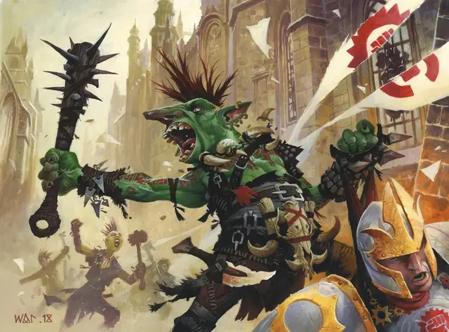

Анарх
Anarch
Маленький или Средний Гуманоид (Любой расы), хаотично-нейтральный

Класс Доспеха 13 (шкурный доспех)
Хиты 11 (2к8 + 2)
Скорость 30 футов
| мод | спас | ||
|---|---|---|---|
| СИЛ | 14 | +2 | +2 |
| ЛОВ | 13 | +1 | +1 |
| ТЕЛ | 12 | +1 | +1 |
| мод | спас | ||
|---|---|---|---|
| ИНТ | 9 | −1 | −1 |
| МДР | 11 | +0 | +0 |
| ХАР | 10 | +0 | +0 |
Навыки Восприятие +2, Выживание +2
Чувства пассивное Восприятие 12
Языки Любой 1 (обычно Общий)
Опасность 1/4 (50 опыта)
Бонус мастерства +2
Особенности
Агрессивный. Анарх может бонусным действием переместиться на расстояние, не превышающее его скорость, в сторону видимого враждебного существа.
Осадное чудовище. Анарх наносит двойной урон объектам и сооружениям.
Действия
Дубина с шипами. . Рукопашная атака оружием: +4 к попаданию, досягаемость 5 фт., одна цель. Попадание: 6 (1к8 + 2) колющего урона или 7 (1к10 + 2) колющего урона при использовании двумя руками.
Описание
Рядовые члены Кланов Груулов, называемые анархами, презирают цивилизацию и поклялись разрушить как ее физические структуры, так и ее институты. Анархи собирают все, от кожаных доспехов, которые они носят, до оружия, которым они владеют. Перебирая мусор из каменных поясов, они иногда натыкаются на магические предметы и другие ценные сокровища.